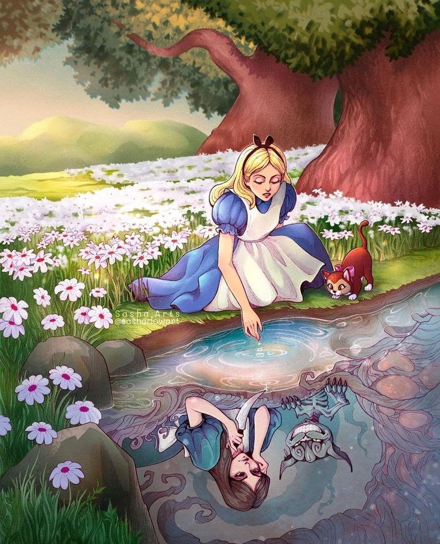

Alicia en el País de las Maravillas (1865)
ELa clásica obra de Lewis Carroll sigue a Alicia, una niña curiosa que cae en un mundo surrealista y absurdo tras seguir a un Conejo Blanco, en este reino:
- El País de las Maravillas es un lugar excéntrico lleno de personajes extravagantes y situaciones ilógicas.
- Personajes como el Sombrerero Loco y el Gato de Cheshire ofrecen consejos enigmáticos y desafíos absurdos.
- Temas de identidad y curiosidadpredominan mientras Alicia explora un mundo que desafía las reglas convencionales.
Alice: Madness returns
Alicia, ahora una joven adulta, regresa a un País de las Maravillas oscuro y distorsionado que refleja su trauma psicológico tras la trágica muerte de sus padres en un incendio, en esta versión del juego:
- El País de las Maravillas está en ruinas y deformado, mostrando una visión grotesca y perturbadora del mundo.
- Los personajes están distorsionados, reflejando el estado mental de Alicia.
- Temas de trauma y recuperaciónestán presentes mientras Alicia enfrenta sus miedos y trata de restaurar el orden.

La Evolución de Alicia: De la Fantasía al Horror Psicológico
La historia de Alicia ha sido reinterpretada de formas significativas, reflejando diferentes aspectos de la experiencia humana. En "Alicia en el País de las Maravillas" (1865) de Lewis Carroll, Alicia explora un mundo surrealista y absurdo, donde la curiosidad y la imaginación infantil desafían las normas y la lógica. Esta versión celebra el asombro y la exploración sin restricciones.
En "Alice: Madness Returns" (2011) de Spicy Horse Games se ofrece una visión oscura del mismo universo. En esta reinterpretación, Alicia enfrenta un País de las Maravillas distorsionado por el trauma psicológico y la locura, explorando temas de dolor y redención en un entorno sombrío. Ambas versiones destacan cómo una narrativa clásica puede evolucionar para explorar temas diversos: la curiosidad y la maravilla en la obra de Carroll, y el trauma y la recuperación tras la muerte de los padres de Alice en el juego. Juntas, muestran la versatilidad de la historia de Alicia en la exploración de nuestras emociones y experiencias.
